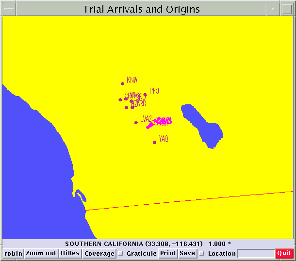
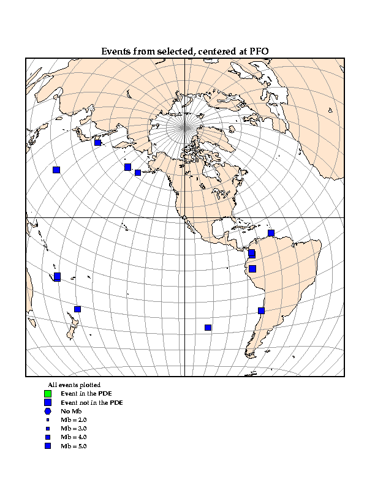

Lesson 1: Picking P phases with dbpick
In this first lesson you will learn to pick the first
arrival P phase with the dbpick program and how to use this information
to identify other teleseismic phases. We will be using data from
an array of seismic stations in southern California called Anza located
in southern California. Here is a crude map of most of the stations:

For this exercise we are going to using a set of well recorded teleseismic
events that sweep across this modern broadband array of station.
Here, in fact, is a map of where the events in the data set you will work
with are located.

Notice that these are all fairly large earthquakes located some distance
from California. They are "teleseisms" because they are located more
than 1000 km from this group of stations.
Follow the following sequence of steps to complete this exercise.
-
Obtain a private copy of the working database.
-
Decide where you want to store the working database files. This will
probably be a new subdirectory in your home directory. Try something
like: mkdir ~/lesson1. From now on I'll refer to this location
as "dbdir". You should substitute whatever location you chose to
actually place these files.
-
Click
here to download the data set. Use your web browser's download
procedure to place the file into dbdir.
-
When the download is finish in a terminal window cd to dbdir and type:
gunzip -c lesson1.tar.gz | tar xf -
-
The above should build a working database in dbdir with the name "anzatele".
This will be your copy of the working dataset.
-
In your terminal window type: dbpick anzatele
-
This will bring up a graphic display window and will blast some text at
your terminal window. When the program prints: Do you
wish to see it? Type y or yes
-
Experiment with the commands and mouse controls described in an associated
dbpick functions document.
Focus for now on the commands
and seismograph graphic window
functions of dbpick. Be sure you understand how to do the following:
-
Time scrolling left and right
-
Time zoom in and zoom out
-
Controlling what traces are displayed (sc command)
-
Experiment with the drop down menus at the top of the display (not described
in the related documents)
-
At this point it might be a good idea to also look at the man page for
dbpick (type: man dbpick in ANOTHER terminal window -- you will confuse
the dbpick command interpretter if you type this into it's command window).
-
Try jumping through the set of events here by using the "nw" (next waveform)
and "pw" commands.
-
For the next step you will need to change the default time window to 1000
s with the command: tw 1000.
-
You can now do something similar with "fe" (first event) and typing "ne"
(next event) to jump from event to event defined in this database.
-
Pick the P waves on one of the events in the database (Please don't use
the first event in the database but try to randomly choose another so we
aren't all looking at the same event. Use the "fe" and one or more
"ne" commands to select one of the events to process.) as follows:
-
type sc *:BHZ to get only the vertical component. You will find PFO
picked already. You can and should use this as a guideline to pick
the P phase on the remaining seismograms.
-
Zoom the display to show 15-20 s of data around the first arrival.
-
Left click the "Add Arrivals" menu button. This will bring up a blue
vertical line that will follow your cursor around. Point at the first arrival
and left click. A red "flag" with a U should appear.
-
Left click the "Add Arrivals" menu button again, but this time when you
point at a seismogram use a right click instead of left. Notice that
now you will get the cursor back after the click and an arrival flag still
appears. This is the way you will eventually need to operate to pick
a lot of seismograms at once because you won't have to keep hitting the
menu button over and over again. Left click will exit from this mode.
-
Label all your picks as "P" by positioning the cursor EXACTLY OVER each
one arrival flag, hold down the middle mouse button, and select "P" from
the drop down menu that should appear.
-
type sc *:BHN,*:BHE to select only the horizontal components.
-
Repeat the picking process for S phases. Be CAREFUL, however, to
only pick S on one horizontal component or the other (i.e. N or E, not
both). The bookeeping system gets confused if there are two
S picks measured on the same station.
-
When you have picked all the traces in this fashion type the following
in the command window:
sc *:*
sp P,S
-
A set of "overlay arrivals" should appear showing the predicted arrival
times. How well do your picks match the theoretical predictions?
Be prepared next time to explain you observations.
-
Printing the data with the picks is problematic. Use the "Snapshot"
program found on Suns under the "Workspace menu" that can be accessed by
a right click and hold on the desktop. Selecting snapshot launches
the program. After that it is pretty much self explanatory and pretty
easy to use. You can print directly from the Snapshot program or
save the images and print them later. Bring them to class next week
and we'll discuss your results.
-
(Optional) If you want a head start on next week type: "sp
basic" in the dbpick command window and look at the theoretical arrival
time predictions. What phases do you see after P? Try making
a color printout of for discussion.